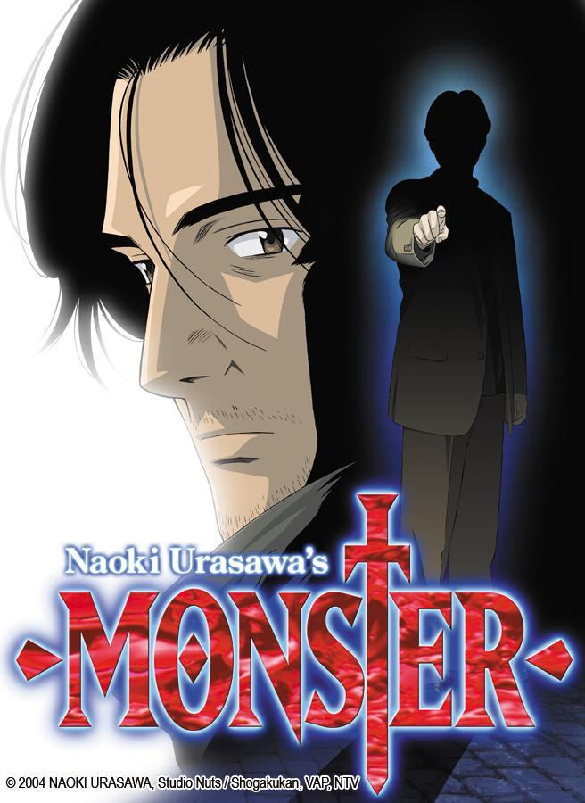

Un profesor de química con cáncer terminal se asocia con un exalumno suyo para fabricar
y vender metanfetamina a fin de que su familia no pase apuros económicos.
Series recién agregadas
Cargar más
Series recomendadas
Fullmetal Alchemist: Brotherhood
Los hermanos Edward y Alphonse Elric continúan la búsqueda de la
Piedra Filosofal con la esperanza de restaurar sus cuerpos.
Donde ver:
Cualquier pagina de anime

Monster
La trama sigue Kenzo Tenma, un brillante neurocirujano que comienza a investigar una serie de
asesinatos relacionados con un paciente al que una vez salvó la vida.
Donde ver:
Netflix o Cualquier pagina de anime
Chernobyl
Valientes hombres y mujeres luchan por mitigar los daños de la
catástrofe nuclear de Chernóbil ocurrida el 25 de abril de 1986.
Donde ver:
HBO MAX
Hunter x Hunter
La historia tiene como protagonista a Gon Freecss, un niño de doce años que desea encontrar a su padre a toda costa, por lo que decide
convertirse en «cazador», justo como él, y de alguna forma hallar su paradero. Mi fav
Donde ver:
Cualquier pagina de anime
The Last of Us
Joel y Ellie, dos personas conectadas por la brutalidad del mundo en el que viven, se ven obligados a enfrentarse
a criaturas y asesinos despiadados, mientras viajan a través de un Estados Unidos posapocalíptico.
Donde ver:
HBO MAX
The Office
Es una parodia de un documental real pero que es ficticio, sobre las travesuras de trabajo de
los empleados de una sucursal de una compañía de papel con sede en Pennsylvania.
Donde ver:
HBO MAX y Netflix
Cargar más
Doramas
Narcosantos
La trama gira en torno a un empresario, incriminado por error, que se ve obligado a
unirse a una peligrosa misión secreta del servicio de inteligencia del gobierno coreano.
Donde ver:
Netflix
La buena mala madre
Young-soon, una madre que enviudó muy joven, se encarga de una granja de cerdos y cría sola a su hijo Kang-ho. Decide ser una 'malamadre',
muy rigurosa con su hijo, para que crezca con ambiciones, y se convierte en un importante fiscal.
Donde ver:
Netflix
El cielo te está esperando
Un joven con Asperger y su tío exconvicto hacen limpiezas traumáticas:
ordenan la vida de quienes parten para que sus seres queridos conozcan esas historias que quedaron sin contar.
Donde ver:
Netflix
Stranger
Hwang Shi Mok (Cho Seung Woo) tuvo una cirugía de cerebro cuando era un niño,
lo que le causó que perdiera sus emociones. Él es muy racional, pero frío y solitario.
Él también es uno de los pocos fiscales que no está envuelto en corrupción.
Donde ver:
Netflix
El amor da mucha guerra
Lo que comienza con un encuentro de lo más desagradable y prosigue en
malentendidos y resentimientos, hasta cómo se forja una relación de amor llena de química.
Donde ver:
Netflix
Mr. Sunshine
La serie se centra en Eugene, un niño coreano que nació en la esclavitud pero que, tras un suceso traumático, consigue escaparse a
EE.UU en 1871, durante la Shinmiyangyo, la primera expedición militar de Estados Unidos a Corea.
Donde ver:
Netflix
18 Otra Vez
Mientras atraviesa por un momento dificil en su matrimonio y en su trabajo, un hombre de mediana edad
tiene una segunda oportunidad cuando regresa a su cuerpo de 18 años. Mi favorita
Donde ver:
HBO MAX
ESTÁ BIEN NO ESTAR BIEN
Se trata de una serie compleja y bien construida sobre la salud mental. Los protagonistas son una exitosa escritora
de cuentos infantiles que tiene un trastorno de personalidad, y el empleado de una sala psiquiátrica.
Donde ver:
Netflix
Cargar más
Animación
Zom 100: Zombie ni Naru made ni Shitai 100 no Koto
Akira ve cómo una empresa explotadora le absorbe por completo la vida. Mientras tanto, cuando su ciudad es
azotada repentinamente por un apocalipsis zombi, encuentra un nuevo sentido a la vida.
Donde ver:
Netflix o cualquier pagina de anime
BEASTARS
En un mundo donde conviven bestias de todo tipo, un amable loco reprime su instinto
depredador tras el asesinato de un compañero
Donde ver:
Netlix o cualquier pagina de anime
Cowboy Bebop
Una eclética tripulacion formada por un exsicario, un expolicia, una estafadora, una pequeña hacker
y un perro de laboratorio van en busca de recompensas en el espacio
Donde ver:
Netflix o cualquier pagina de anime
Kaguya-sama wa Kokurasetai: Tensai-tachi no Renai Zunousen
Kaguya Shinomiya y Miyuki Shirogane ambos acaban enamorándose el uno del otro.
¿El problema? Que ambos son demasiado orgullosos como para admitir que están enamorados. De los mejores de romance, mi fav
Donde ver:
Cualquier pagina de anime
Más alla del jardin
Es una miniserie de 10 episodios, dos hermanos que viajan a través de un extraño bosque
con el fin de encontrar su camino a casa.
Donde ver:
HBO MAX
Tate no Yuusha no Nariagari
Iwatani Naofumi es el típico otaku, al menos hasta que un día encuentra en la biblioteca
un libro que lo transporta a otro mundo.
Donde ver:
Cualquier pagina de anime
Ousama Ranking
La historia se centra en Bojji, un débil y sordo príncipe que no puede sostener incluso una espada para niños.
Como el primogénito, sostiene su enorme deseo de convertirse en el más poderoso rey del mundo.
Donde ver:
Cualquier pagina de anime
One Piece
Un joven llamado Monkey D. Luffy, inspirado por su amigo pirata Shanks, comienza un viaje para
alcanzar su sueño, ser el Rey de los piratas.